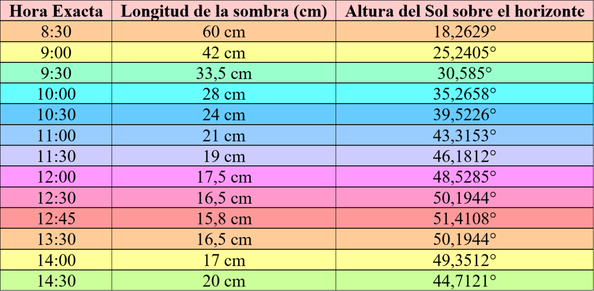
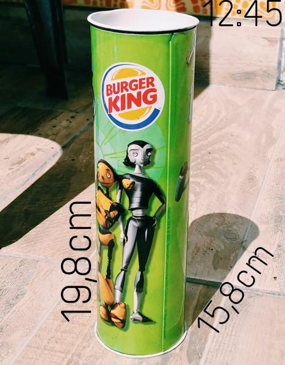

Medición 2

El dispositivo que utilicé como gnomon es una lata de Burger King que mide 19.8 centímetros de largo. Realicé las mediciones el día 16 de septiembre a las 8:30 am y volví a medir cada 30 minutos. Alrededor de las 12:30, cuando juzgué que la culminación superior del Sol se acercaba, me quedé cerca del gnomon y registré la longitud menor de la sombra a las 12:45 que medía 15,8 cm.


Para realizar los cálculos, primero imaginamos un triángulo rectángulo cuyos catetos serán la altura del gnomon y la menor longitud de la sombra. La hipotenusa consistirá en una línea imaginaria que pasa desde el Sol hasta el último punto de la sombra. El ángulo entre el cateto sombra y la hipotenusa será la altura del sol que podemos calcular por trigonometría.
Luego, con el dato de la altura del Sol sobre le horizonte y la declinación del Sol en el día de la fecha siendo 2° 16’ 35’’ (según los datos del Stellarium), calculé la altura del polo más elevado que es equivalente a la latitud del lugar.
La latitud real del lugar es 34° 36’ 30’’ sur, por lo que hay un error de 6° 15’ 26,08’’. Factiblemente este error se deba a las condiciones de la medición, en donde el instrumento utilizado (una cinta métrica) constaba de una apreciación mínima de 1 milímetro, y también debido a que los límites de la sombra no eran claros. Además, no conocía con precisión el momento de la culminación superior del Sol, por tanto, es probable que haya sucedido unos minutos después o antes.